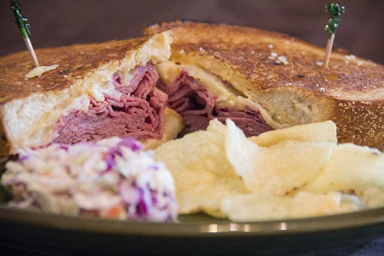

The Leaky Cauldron
Famous Wizzard Recipes

Molly Weasley's corned-beef sandwiches
The perfect quick and easy food for long train rides!
Servings
4 persons
Difficulty
Beginner
Cost
$
Ingredients
- 4 tbsp of softened butter
- 8 slices of sandwich bread
- 1/4 cup of mayonnaise
- 1/2 lb of deli corned beef
- 8 slices of cheese your choice
Steps
- Butter one side of each bread slices.
- On 4 unbuttered side, spread some mayonnaise.
- Add slices of corned beef and 2 slices of cheese per sandwich.
- Put the remaining bread slices on top of each sandwich, the buttered side up.
- In a skillet, over medium heat, toast your sandwiches.
Back to top